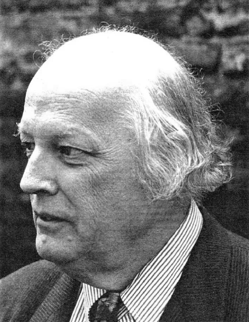

Meetings are on alternate Thursdays
unless otherwise specified
in the Small Hall, Hayes Village Hall, Hayes Street,
Hayes, Bromley BR2 7LE at 7.30pm SHARP
Contact:
MRS MARGARET HAINES
43 Glyndebourne Park, Orpington, BR6 8EX
Email: soden.m@btinternet.com
NEW MEMBERS AND VISITORS WELCOME
Full Season Membership: £25.00
Recital Fee: £3.00 per evening
Guests: £5.00 per evening
The recital/guest fees include interval refreshments.
| FIFTY-SEVENTH SEASON APRIL–SEPTEMBER 2025 | |||||||
|---|---|---|---|---|---|---|---|
| APR. | 3 | ‘To the Sun, the Moon and Beyond’ | Carolyn Knight | JULY | 10 | A Czech List | Eric Pridham |
| 17 | ‘View from the Back Row’ | Dave Lee | 24 | Members’ Choice | |||
| MAY | 1 | 'Alma Brasileira' | Ray Picot | AUG. | 7 | Major works? Minor keys |
David Duncan |
| 15 | Inspiring Future Generations | Yvonne Smith | 21 | Where in the world? | David Duncan & Maureen Greenhouse |
||
| 29 | The Growth of the Little Mushroom | Maureen Greenhouse | SEPT. | 4 | Maurice Ravel 1875–1937 |
Barbara Broughton | |
| JUNE | 12 | Tchaikovsky – to the Crisis | Ian Bailey | 18 | Death and Taxes | John Isaac | |
| 26 | ‘These I have blown’ | Andrew Muir | |||||